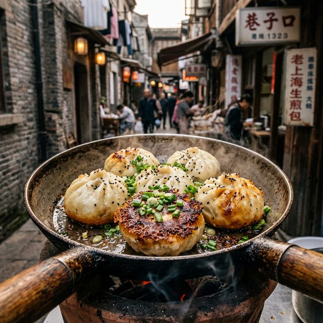
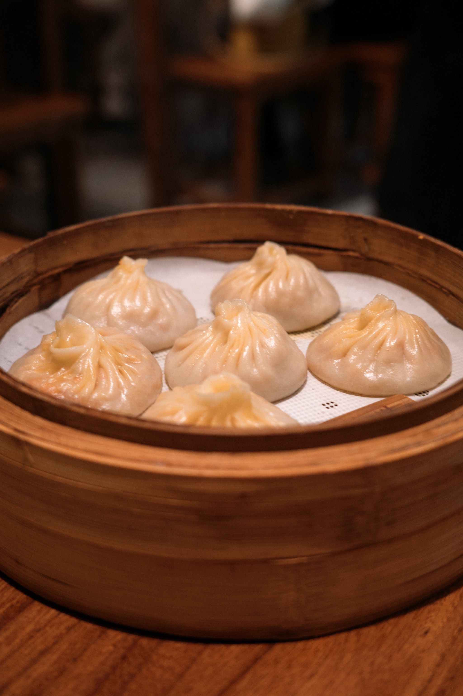

Shengjian Mantou
Shanghai's Shengjian Mantou is not just the king of breakfast; it is a microcosm of the city's vibrant street life. The bottom is fried to a golden, krispy crunch, while the top remains soft and airy. Inside, a perfect blend of savory meat and secret juice awaits. One bite is a century-old comfort.
AMBASSADOR'S TIP
"Bite a small hole first to sip the crystal-clear soup – this is the authentic way to enjoy Shengjian. Pair it with a steaming bowl of curry beef soup for a meal that rivals any delicacy."
Where to find: Try the old master shops near Wukang Road, or the classic Da Hu Chun (the non-yeast style).

Xiao Long Bao
If Shengjian is bold, then Xiao Long Bao is a work of extreme delicacy. The skin is as thin as a cicada's wing, yet strong enough to hold a generous filling of crab roe and pork. Each dumpling represents Shanghai's ultimate pursuit of 'freshness'.
CULTURAL INSIGHT
"Lift it like a lantern, set it down like a chrysanthemum. Every fold is a crystallization of craft and temperature, the most elegant footnote in Shanghai's culinary map."
Where to find: Nanxiang Steamed Bun Restaurant in Yuyuan Garden is the most famous pilgrimage site, where every bite is history concentrated.